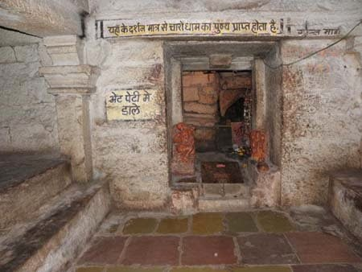
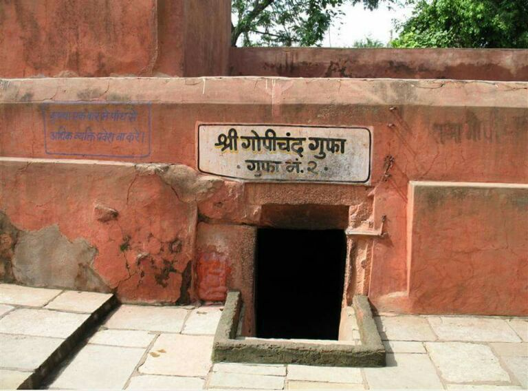

गढ़कालिका के दक्षिण में भर्तृहरि गुफा स्थित है। सम्राट विक्रमादित्य के बड़े भाई राजा भर्तृहरि की साधना-स्थली होने के कारण यह स्थान प्रसिद्ध है।
राज-पाट त्यागने के पश्चात उन्होंने नाथ पंथ की दीक्षा लेकर कई वर्षों तक यहां पर घनघोर योग-साधना की थी।

शिप्रा तट पर स्थित यह गुफा, बौद्ध एवं परमारकालीन स्थापत्य कला की संरचना है।
इसका प्रवेश मार्ग तुलनात्मक रूप से संकरा है तथा भीतरी दक्षिणी भाग में गोपीचंदजी की प्रतिमा है। राजयोगी भर्तृहरि की धूनी के ऊपर की शिला पर हाथ के पंजे के निशान हैं।
कहा जाता है कि भर्तृहरि की तपस्या से इंद्र डर गया था और उनकी तपस्या को भंग करने के लिए उसने एक शिला फेंकी जिसे भर्तृहरि ने अपना हाथ ऊपर करके वहीं रोक दिया था।

अत: भर्तृहरि के हाथ का निशान इस शिला पर अंकित हो गया। किंवदंती है कि पहले इस गुफा के अंदर से ही चारों धामों तक जाने के रास्ते थे, जो आजकल बंद हैं।
इस गुफा की व्यवस्था नाथपंथी साधुगण करते हैं। यहां से कुछ दूर पर नागपंथ के प्रमुख आचार्य मत्स्येन्द्रनाथजी की समाधि है। उनको पीर मछंदरनाथ भी कहते हैं।